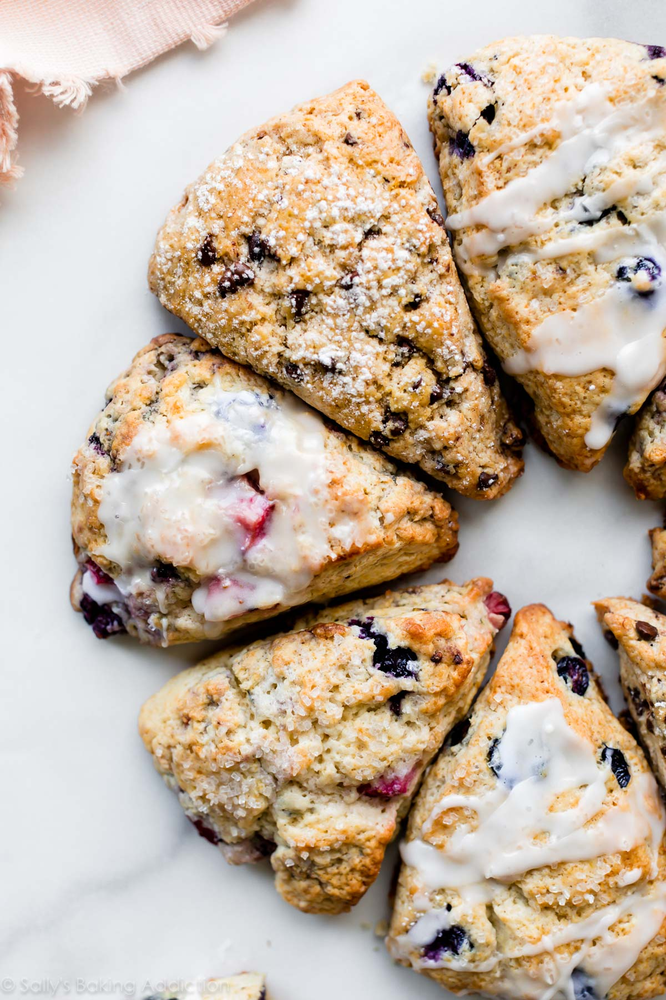

Scones

Different types of scones can be made using this recipe, from sweet to savoury, soft, cryspy and moist.
This recipe is quite simple, yet effective. The resulting scones will have crips edges while retaining the trademakrk soft and chewey interior. While being a basic recipe, don't underestimate the scones that will come out of the oven.
Ingredients
- Flour
- Sugar
- Baking Powder
- Salt
- Butter
- Heavy Cream or Buttermilk
- Eggs
- Vanilla (optional if making savory scones)
Steps:
- Mix the dry ingredients together
- Cut in the grated frozen butter
- Whisk the wet ingredients together
- Mix the dry ingredients with the wet ingredients
- Make a disc and cut into blocks or wedges
- With a brush, spread the buttermilk or heavy cream for a crusty exterior
- Refrigerate for at least 30 minutes
- Bake for 20 to 25 minutes until golden brown